Homework 2
#loading in the data
Rows: 125
Columns: 14
$ case <chr> "Oxford High School shooting", "San Jose VTA shoo…
$ year <dbl> 2021, 2021, 2021, 2021, 2021, 2021, 2020, 2020, 2…
$ month <chr> "Nov", "May", "Apr", "Mar", "Mar", "Mar", "Mar", …
$ day <dbl> 30, 26, 15, 31, 22, 16, 16, 26, 10, 6, 31, 4, 3, …
$ location <chr> "Oxford, Michigan", "San Jose, California", "Indi…
$ summary <chr> "Ethan Crumbley, a 15-year-old student at Oxford …
$ fatalities <dbl> 4, 9, 8, 4, 10, 8, 4, 5, 4, 3, 7, 9, 22, 3, 12, 5…
$ injured <dbl> 7, 0, 7, 1, 0, 1, 0, 0, 3, 8, 25, 27, 26, 12, 4, …
$ total_victims <dbl> 11, 9, 15, 5, 10, 9, 4, 5, 7, 11, 32, 36, 48, 15,…
$ location_type <chr> "School", "Workplace", "Workplace", "Workplace", …
$ male <lgl> TRUE, TRUE, TRUE, TRUE, TRUE, TRUE, TRUE, TRUE, T…
$ age_of_shooter <dbl> 15, 57, 19, NA, 21, 21, 31, 51, NA, NA, 36, 24, 2…
$ race <chr> NA, NA, "White", NA, NA, "White", NA, "Black", "B…
$ prior_mental_illness <chr> NA, "Yes", "Yes", NA, "Yes", NA, NA, NA, NA, NA, …# A tibble: 6 × 14
case year month day location summary fatalities injured total_victims
<chr> <dbl> <chr> <dbl> <chr> <chr> <dbl> <dbl> <dbl>
1 Oxford Hi… 2021 Nov 30 Oxford,… Ethan … 4 7 11
2 San Jose … 2021 May 26 San Jos… Samuel… 9 0 9
3 FedEx war… 2021 Apr 15 Indiana… Brando… 8 7 15
4 Orange of… 2021 Mar 31 Orange,… Aminad… 4 1 5
5 Boulder s… 2021 Mar 22 Boulder… Ahmad … 10 0 10
6 Atlanta m… 2021 Mar 16 Atlanta… Robert… 8 1 9
# ℹ 5 more variables: location_type <chr>, male <lgl>, age_of_shooter <dbl>,
# race <chr>, prior_mental_illness <chr>| column(variable) | description |
|---|---|
| case | short name of incident |
| year, month, day | year, month, day in which the shooting occurred |
| location | city and state where the shooting occurred |
| summary | brief description of the incident |
| fatalities | Number of fatalities in the incident, excluding the shooter |
| injured | Number of injured, non-fatal victims in the incident, excluding the shooter |
| total_victims | number of total victims in the incident, excluding the shooter |
| location_type | generic location in which the shooting took place |
| male | logical value, indicating whether the shooter was male |
| age_of_shooter | age of the shooter when the incident occurred |
| race | race of the shooter |
| prior_mental_illness | did the shooter show evidence of mental illness prior to the incident? |
- Generate a data frame that summarizes the number of mass shootings per year.
#Create a new data frame for mass shootings per year called mass_shootings_yearly
mass_shootings_yearly<- mass_shootings %>%
#Filter out any Na's
filter(!is.na(year)) %>%
#group by year and summarize the count of mass shootings
group_by(year) %>%
summarize(Count = n())
mass_shootings_yearly# A tibble: 37 × 2
year Count
<dbl> <int>
1 1982 1
2 1984 2
3 1986 1
4 1987 1
5 1988 1
6 1989 2
7 1990 1
8 1991 3
9 1992 2
10 1993 4
# ℹ 27 more rows- Generate a bar chart that identifies the number of mass shooters associated with each race category. The bars should be sorted from highest to lowest and each bar should show its number.
#Creating a bar chart for number of mass shooters with each race category
mass_shootings %>%
#replace NA race entries with 'Unknown'
#reorder from most to least frequent race
mutate(race= case_when( !is.na(race) ~ race, TRUE ~ 'Other'),race=fct_infreq(race)) %>%
#use GGplot to produce a bar char, initialise x variable and aes
ggplot(aes(x=race)) +
#plot on a barchart
geom_bar(fill='#09A1B5',color="#523886") +
#add aesthetic label
geom_text(aes(label = after_stat(count)), stat = "count", vjust = 1.1, colour = "white")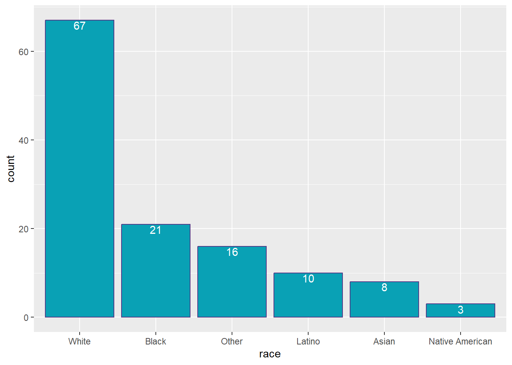
- Generate a boxplot visualizing the number of total victims, by type of location.
#assume total victims means to exclude the shooter from the total
#manipulate data for the boxplot
mass_shootings %>%
#Filter out for victim count NA
filter(!is.na(total_victims)) %>%
#replace NA race entries with 'Unknown'
mutate(location= case_when( !is.na(location_type) ~ location_type, TRUE ~ 'Other')) %>%
#Create a plot
ggplot(aes(x=location_type,y=total_victims)) +
geom_boxplot(color='darkblue') +
#facet zoom to better see the plots on a more reasonable scale due to the outlier
facet_zoom(ylim = c(0, 150))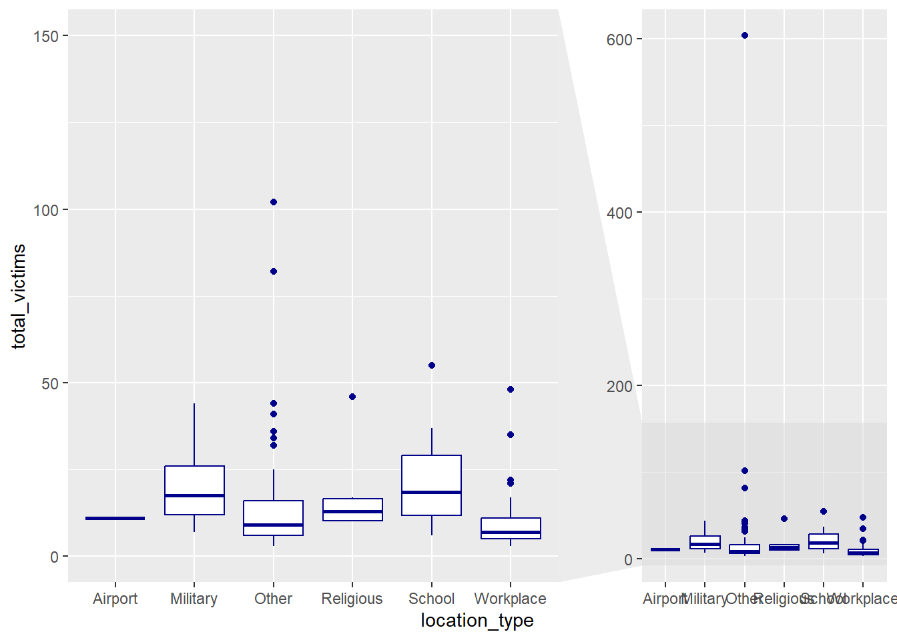
- Redraw the same plot, but remove the Las Vegas Strip massacre from the dataset.
#View data set for las vegas strip massacre only
mass_shootings %>%
#only filter for las vegas strip
filter(grepl("Las Vegas Strip",case))# A tibble: 1 × 14
case year month day location summary fatalities injured total_victims
<chr> <dbl> <chr> <dbl> <chr> <chr> <dbl> <dbl> <dbl>
1 Las Vegas… 2017 Oct 1 Las Veg… "Steph… 58 546 604
# ℹ 5 more variables: location_type <chr>, male <lgl>, age_of_shooter <dbl>,
# race <chr>, prior_mental_illness <chr>#only shows the 1 entry as required
#assume total victims means to exclude the shooter from the total
#manipulate data for the boxplot
mass_shootings %>%
#Filter out for victim count NA and for the las vegas strip massacre
filter(!is.na(total_victims) & !grepl("Las Vegas Strip",case)) %>%
#replace NA race entries with 'Unknown'
mutate(location= case_when( !is.na(location_type) ~ location_type, TRUE ~ 'Other')) %>%
#Create a plot
ggplot(aes(x=location_type,y=total_victims)) +
geom_boxplot()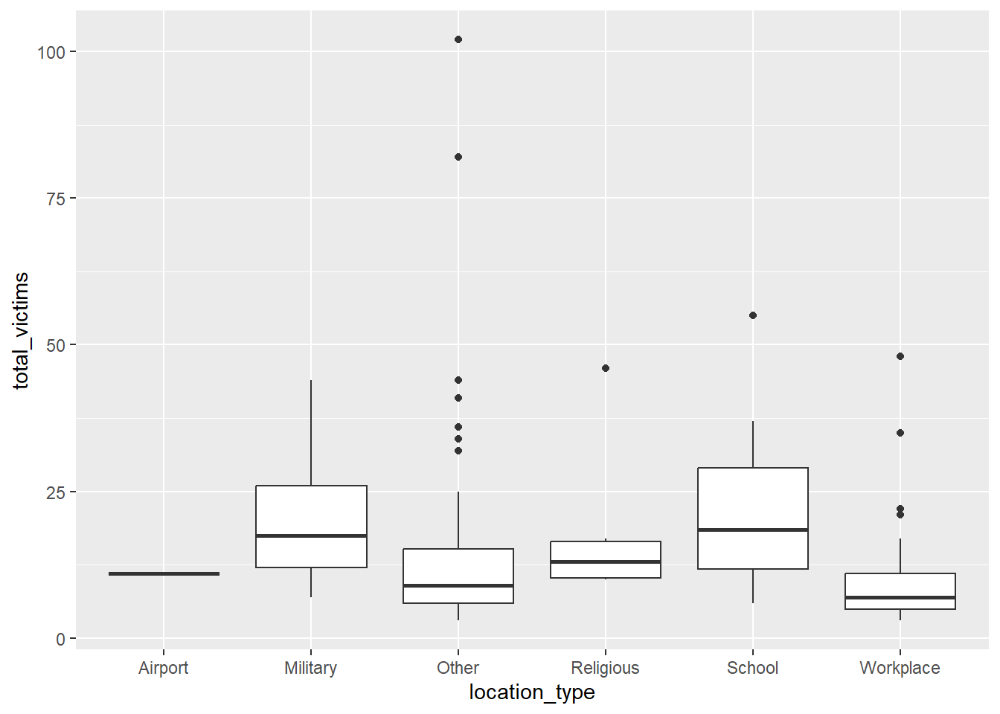
- How many white males with prior signs of mental illness initiated a mass shooting after 2000?
Prior_Mental_2000 <- mass_shootings %>%
#Filter for year>= 2000, for white males only
filter (year>=2000 & race=='White' & male==TRUE) %>%
#Convert NA's to a new category 'Unknown'
#this will allow us to see what proportion of mass shooters have a hidden history in terms of mental illness which will help to validate/invalidate any conclusions
mutate(prior_mental_illness= case_when( !is.na(prior_mental_illness)
~ prior_mental_illness, TRUE ~ 'Unknown'),
#add an arbitrary weighting column
n=1,
#add column calculating the % share each case has to the total based on current equal weighting
percent=n/sum(n)) %>%
#group by prior_mental_illness
group_by(prior_mental_illness) %>%
#summaries data for count of each
summarize(Count = n(),
percent = sum(percent))
Prior_Mental_2000# A tibble: 3 × 3
prior_mental_illness Count percent
<chr> <int> <dbl>
1 No 4 0.0889
2 Unknown 18 0.4
3 Yes 23 0.511 #>50% of white males had a history of prior mental illness since 2000, however >40% also had an unknown history
#hence it would be be unreliable to draw a conclusion from the data, given the unknown portion represents a significant portion of the data.
#instead lets exclude the unknowns and see of the cases with known mental health history what the proportions are if we assume the unknown data behaviors can be assimilated by the behavior of the known dataset
Prior_Mental_2000_v2 <- mass_shootings %>%
#Filter for year>= 2000, for white males only & exclude NA values in prior mental illness
filter (year>=2000 & race=='White' & male==TRUE & !is.na(prior_mental_illness)) %>%
mutate( #add an arbitrary weighting column
n=1,
#add column calculating the % share each case has to the total based on current equal weighting
percent=n/sum(n)) %>%
#group by prior_mental_illness
group_by(prior_mental_illness) %>%
#summaries data for count of each
summarize(Count = n(),
percent = sum(percent))
Prior_Mental_2000_v2# A tibble: 2 × 3
prior_mental_illness Count percent
<chr> <int> <dbl>
1 No 4 0.148
2 Yes 23 0.852#of cases with a known history of mental illness for white males since 2000, almost 85% were perpetrated by individuals with a history of mental health issues.
#We could extrapolate this relation ship and assume the 85% of cases that have a history of prior mental illness holds
#overall i believe the prior_mental_illness field has too many NA values to produce a strong conclusion on the relationship between cases and mental illness. However, we can clearly see that a large proportion of cases (>50% at the minimum) show a history of mental illness which shows it is a significant factor, but a valid conclusion on the full extent of the relationship cannot be understood due to the limited data.- Which month of the year has the most mass shootings? Generate a bar chart sorted in chronological (natural) order (Jan-Feb-Mar- etc) to provide evidence of your answer.
mass_shootings %>%
#Filter for any month data missing
filter(!is.na(month)) %>%
#Group by month
group_by(month) %>%
#create bar chart
ggplot(aes(x=month)) +
geom_bar(fill="#2A944D") +
#order chronologically
scale_x_discrete(limits = month.abb)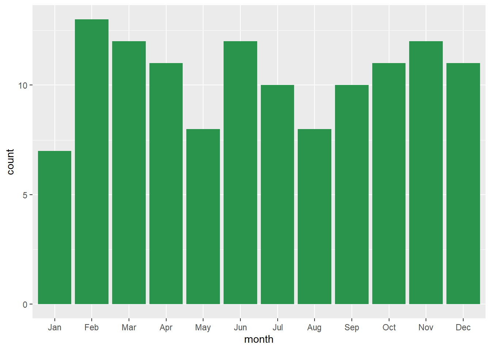
#It can clearly be seen from the bar chart that February is the most dangerous month in term of number of shootings- How does the distribution of mass shooting fatalities differ between White and Black shooters? What about White and Latino shooters?
#Create list of races to be compared
R <- c('Latino','White', 'Black')
#Create a range of bar charts to compare distribution by month
mass_shootings %>%
#Filter for any total victims data missing
#Exclude las vegas strip case as it is a large outlier which will inflate the mean
filter(!is.na(total_victims) & race %in% R & !grepl("Las Vegas Strip",case)) %>%
#create box plot as it is easy to compare IQR and means side by side
ggplot(aes(x=race,y=total_victims)) +
geom_boxplot(color="darkred",fill="lightblue") +
facet_zoom(ylim = c(0, 30)) 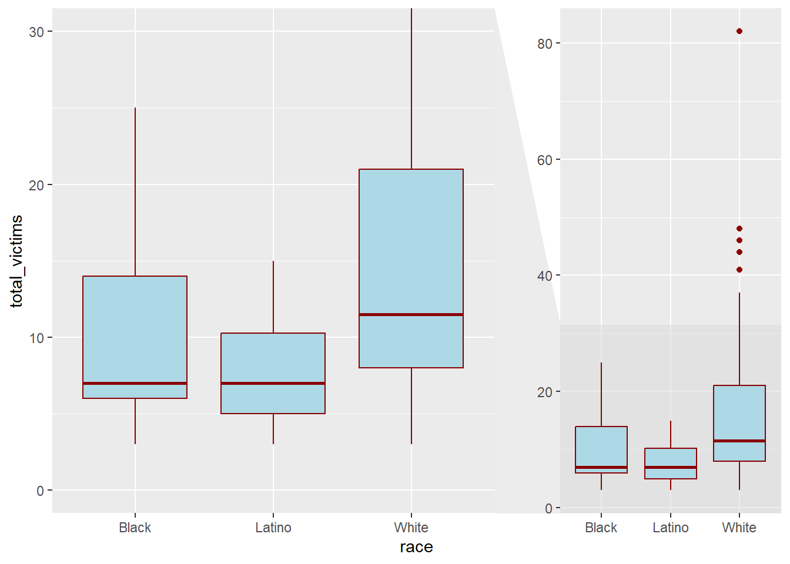
#Black shooters have a lower median and narrower distribution of victims as compared to white shooters
#Latino shooters also have a lower median number of victims than white shooters, and a significantly narrower IQR vs white shooters.
#Overall white shooters appear to have a larger number of victims on average, with mass shootings from white shooters covering a wider range of victim totals as compared to Black/Latino
### Very open-ended
#- Are mass shootings with shooters suffering from mental illness different from mass shootings with no #signs of mental illness in the shooter?
#utilize data frame created earlier comparing Yes/No mental health issues, excusing cases where mental health history was unknown
mass_shootings %>%
#create unknown category for NA's
mutate(prior_mental_illness= case_when(!is.na(prior_mental_illness) ~ prior_mental_illness, TRUE ~ 'Unknown')) %>%
#group by prior_mental_illness
group_by(prior_mental_illness) %>%
ggplot(aes(x=prior_mental_illness,y=total_victims)) +
geom_boxplot(fill="white",color="red") +
facet_zoom(ylim = c(0, 30)) 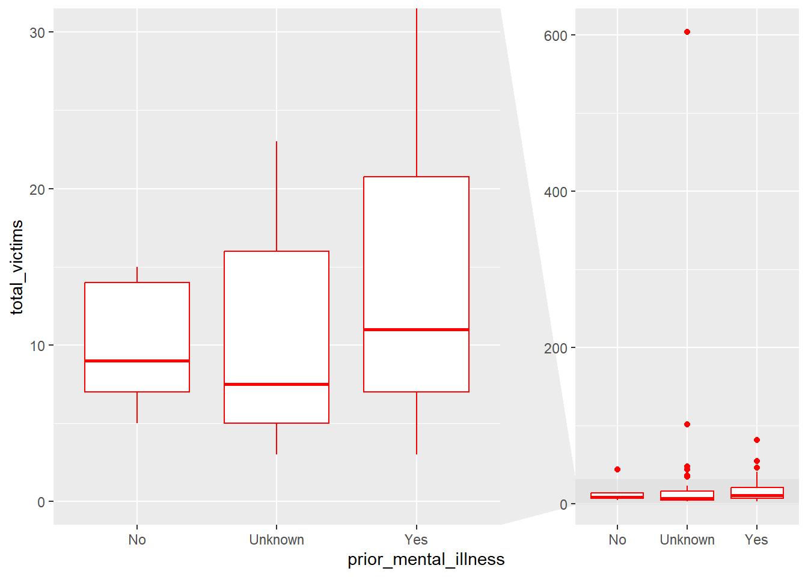
#From the limited data we have on prior mental illness, we can clearly see that shootings with a history of mental illness for the shooter on average have a higher total victim count, and a significantly wider range/IQR in the total number of victims Vs those without a history of mental illness.
#Again however,we can see from the plot of the cases with an unknown history of mental illness that they exhibit a lower median and intermediate IQR when compared to Yes/No, which could skew the conclusion depending on how those unknown data points are catagorised. - Assess the relationship between mental illness and total victims, mental illness and location type, and the intersection of all three variables.
#Mental illness and total victims comparison
mass_shootings %>%
#create unknown category for NA's
mutate(prior_mental_illness= case_when(!is.na(prior_mental_illness) ~ prior_mental_illness, TRUE ~ 'Unknown')) %>%
#group by prior_mental_illness
group_by(prior_mental_illness) %>%
ggplot(aes(x=prior_mental_illness,y=total_victims)) +
geom_boxplot() +
facet_zoom(ylim = c(0, 30)) 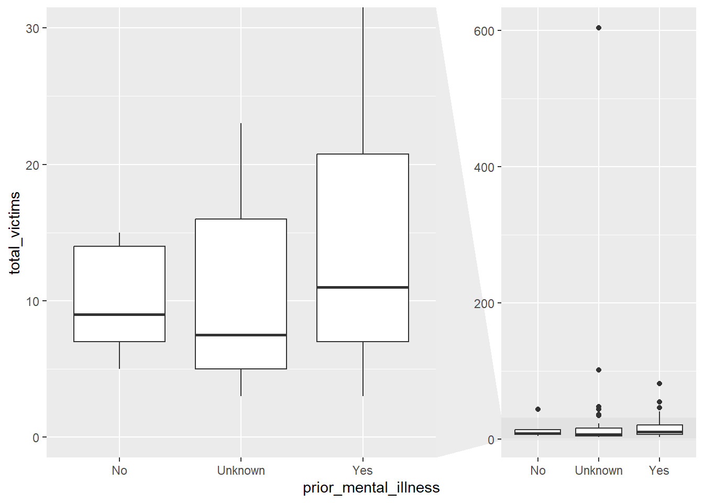
#Explanation from previous
#From the limited data we have on prior mental illness, we can clearly see that shootings with a history of mental illness for the shooter on average have a higher total victim count, and a significantly wider range/IQR in the total number of victims Vs those without a history of mental illness.
#Again however,we can see from the plot of the cases with an unknown history of mental illness that they exhibit a lower median and intermediate IQR when compared to Yes/No, which could skew the conclusion depending on how those unknown data points are catagorised.
#Mental illness and location type comparison
mass_shootings %>%
#create unknown category for NA's
mutate(prior_mental_illness= case_when(!is.na(prior_mental_illness) ~ prior_mental_illness, TRUE ~ 'Unknown')) %>%
#group by prior_mental_illness
group_by(location_type, prior_mental_illness) %>%
#Summarise count for each category
summarise(count=n()) %>%
#multiple bar chart
ggplot(aes(location_type, count, fill = prior_mental_illness)) +
geom_bar(stat="identity", position = "dodge")`summarise()` has grouped output by 'location_type'. You can override using the
`.groups` argument.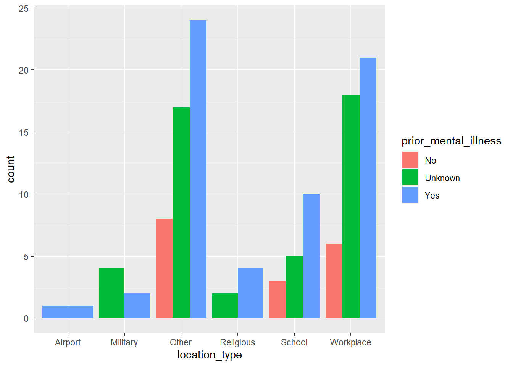
#consistent trend with prior mental illness producing more cases in each location, except in the military where interestingly unknown history of mental illness was the most cases.
#intersection of mental illness, location, total victims comparison
mass_shootings %>%
#create unknown category for NA's
mutate(prior_mental_illness= case_when(!is.na(prior_mental_illness) ~ prior_mental_illness, TRUE ~ 'Unknown')) %>%
#group by prior_mental_illness
group_by(location_type, prior_mental_illness) %>%
#multiple bar chart
ggplot(aes(location_type, total_victims, fill = prior_mental_illness)) +
geom_bar(stat="identity", position = "dodge") +
facet_zoom(ylim = c(0, 100)) 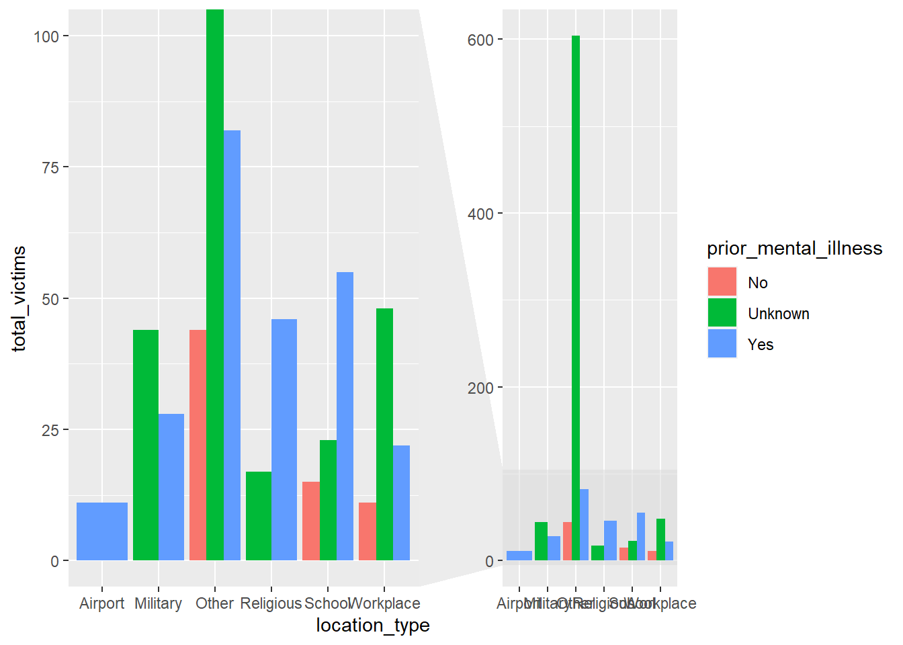
#a consistent trend across all location with a history of mental illness leading to a higher total victim count Vs no history of mental illness.
#Additionally, cases where prior mental health history is unknown also appear to have a high total victim count which could imply a significant portion of that population may also have a history of mental illness. Although, there is not enough data/information on the data to draw such a conclusion currently.Obtain the data
The dataset is too large to be hosted on Canvas or Github, so please download it from dropbox https://www.dropbox.com/sh/q1yk8mmnbbrzavl/AAAxzRtIhag9Nc_hODafGV2ka?dl=0 and save it in your dsb repo, under the data folder
Rows: 671,028
Columns: 14
$ trans_date_trans_time <dttm> 2019-02-22 07:32:58, 2019-02-16 15:07:20, 2019-…
$ trans_year <dbl> 2019, 2019, 2019, 2019, 2019, 2019, 2019, 2020, …
$ category <chr> "entertainment", "kids_pets", "personal_care", "…
$ amt <dbl> 7.79, 3.89, 8.43, 40.00, 54.04, 95.61, 64.95, 3.…
$ city <chr> "Veedersburg", "Holloway", "Arnold", "Apison", "…
$ state <chr> "IN", "OH", "MO", "TN", "CO", "GA", "MN", "AL", …
$ lat <dbl> 40.1186, 40.0113, 38.4305, 35.0149, 39.4584, 32.…
$ long <dbl> -87.2602, -80.9701, -90.3870, -85.0164, -106.385…
$ city_pop <dbl> 4049, 128, 35439, 3730, 277, 1841, 136, 190178, …
$ job <chr> "Development worker, community", "Child psychoth…
$ dob <date> 1959-10-19, 1946-04-03, 1985-03-31, 1991-01-28,…
$ merch_lat <dbl> 39.41679, 39.74585, 37.73078, 34.53277, 39.95244…
$ merch_long <dbl> -87.52619, -81.52477, -91.36875, -84.10676, -106…
$ is_fraud <dbl> 0, 0, 0, 0, 0, 0, 0, 0, 0, 0, 0, 0, 0, 0, 0, 0, …# A tibble: 6 × 14
trans_date_trans_time trans_year category amt city state lat long
<dttm> <dbl> <chr> <dbl> <chr> <chr> <dbl> <dbl>
1 2019-02-22 07:32:58 2019 entertainment 7.79 Veede… IN 40.1 -87.3
2 2019-02-16 15:07:20 2019 kids_pets 3.89 Hollo… OH 40.0 -81.0
3 2019-12-27 22:25:34 2019 personal_care 8.43 Arnold MO 38.4 -90.4
4 2019-03-03 10:11:39 2019 grocery_net 40 Apison TN 35.0 -85.0
5 2019-02-09 17:14:54 2019 food_dining 54.0 Red C… CO 39.5 -106.
6 2019-09-09 01:19:59 2019 shopping_net 95.6 Irwin… GA 32.8 -83.2
# ℹ 6 more variables: city_pop <dbl>, job <chr>, dob <date>, merch_lat <dbl>,
# merch_long <dbl>, is_fraud <dbl>The data dictionary is as follows
| column(variable) | description |
|---|---|
| trans_date_trans_time | Transaction DateTime |
| trans_year | Transaction year |
| category | category of merchant |
| amt | amount of transaction |
| city | City of card holder |
| state | State of card holder |
| lat | Latitude location of purchase |
| long | Longitude location of purchase |
| city_pop | card holder’s city population |
| job | job of card holder |
| dob | date of birth of card holder |
| merch_lat | Latitude Location of Merchant |
| merch_long | Longitude Location of Merchant |
| is_fraud | Whether Transaction is Fraud (1) or Not (0) |
- In this dataset, how likely are fraudulent transactions? Generate a table that summarizes the number and frequency of fraudulent transactions per year.
card_fraud %>%
#Filter out transactions without a fraud flag
filter(!is.na(is_fraud)) %>%
#Group by transaction year
group_by(trans_year) %>%
#add a count of transactions and calculate frequency as total count/365 days
summarise(No_Frauds = n(),
Freq_Fraud_per_day = No_Frauds/365,
Freq_per_mins= No_Frauds/(365*24*60))# A tibble: 2 × 4
trans_year No_Frauds Freq_Fraud_per_day Freq_per_mins
<dbl> <int> <dbl> <dbl>
1 2019 478646 1311. 0.911
2 2020 192382 527. 0.366- How much money (in US$ terms) are fraudulent transactions costing the company? Generate a table that summarizes the total amount of legitimate and fraudulent transactions per year and calculate the % of fraudulent transactions, in US$ terms.
Summary_One <- card_fraud %>%
#Filter out transactions without a fraud flag or amt
filter(!is.na(is_fraud) & !is.na(amt)) %>%
#mutate 2 new columns for fraudulent/none fraudulent transaction amt in USD
mutate(Amt_Non_Fraudulent = case_when(is_fraud==1 ~ 0, TRUE ~ amt),
Amt_Fraudulent = case_when(is_fraud == 0 ~ 0, TRUE ~ amt)) %>%
#Group by transaction year
group_by(trans_year) %>%
#summaries total amount for non-fraudulent, fraudulent transactions, and the % share for fraudulent transactions in term of value
summarise(Total_Non_Fraudulent = sum(Amt_Non_Fraudulent),
Total_Fraudulent = sum(Amt_Fraudulent),
percent_fraud= Total_Fraudulent/(Total_Non_Fraudulent+Total_Fraudulent))
Summary_One# A tibble: 2 × 4
trans_year Total_Non_Fraudulent Total_Fraudulent percent_fraud
<dbl> <dbl> <dbl> <dbl>
1 2019 32182901. 1423140. 0.0423
2 2020 12925914. 651949. 0.0480- Generate a histogram that shows the distribution of amounts charged to credit card, both for legitimate and fraudulent accounts. Also, for both types of transactions, calculate some quick summary statistics.
card_fraud %>%
#Filter out transactions without a fraud flag or amt
filter(!is.na(is_fraud) & !is.na(amt) ) %>%
#Group by is fraud
group_by(is_fraud) %>%
#Create histogram plot
ggplot(aes(x=amt)) +
geom_histogram() +
facet_wrap(~is_fraud, scales = "free") `stat_bin()` using `bins = 30`. Pick better value with `binwidth`.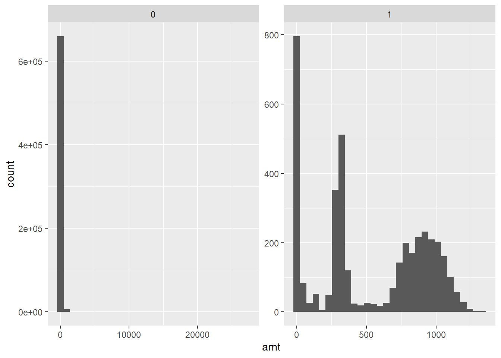
#Summary statistics
#Summary for fraudulent
skim(card_fraud %>%
#Filter out transactions without a fraud flag or amt
filter(!is.na(is_fraud) & !is.na(amt) & is_fraud==1 ))| Name | %>%(…) |
| Number of rows | 3936 |
| Number of columns | 14 |
| _______________________ | |
| Column type frequency: | |
| character | 4 |
| Date | 1 |
| numeric | 8 |
| POSIXct | 1 |
| ________________________ | |
| Group variables | None |
Variable type: character
| skim_variable | n_missing | complete_rate | min | max | empty | n_unique | whitespace |
|---|---|---|---|---|---|---|---|
| category | 0 | 1 | 4 | 14 | 0 | 14 | 0 |
| city | 0 | 1 | 3 | 25 | 0 | 699 | 0 |
| state | 0 | 1 | 2 | 2 | 0 | 51 | 0 |
| job | 0 | 1 | 3 | 53 | 0 | 441 | 0 |
Variable type: Date
| skim_variable | n_missing | complete_rate | min | max | median | n_unique |
|---|---|---|---|---|---|---|
| dob | 0 | 1 | 1925-08-29 | 2005-01-29 | 1971-08-20 | 749 |
Variable type: numeric
| skim_variable | n_missing | complete_rate | mean | sd | p0 | p25 | p50 | p75 | p100 | hist |
|---|---|---|---|---|---|---|---|---|---|---|
| trans_year | 0 | 1 | 2019.31 | 0.46 | 2019.00 | 2019.00 | 2019.00 | 2020.00 | 2020.00 | ▇▁▁▁▃ |
| amt | 0 | 1 | 527.21 | 391.29 | 1.06 | 240.49 | 368.83 | 900.94 | 1334.07 | ▇▇▃▇▂ |
| lat | 0 | 1 | 38.65 | 5.10 | 20.03 | 35.06 | 39.43 | 41.84 | 66.69 | ▁▆▇▁▁ |
| long | 0 | 1 | -89.91 | 14.29 | -165.67 | -96.70 | -86.69 | -79.99 | -68.56 | ▁▁▂▆▇ |
| city_pop | 0 | 1 | 94096.13 | 328508.72 | 23.00 | 741.00 | 2526.00 | 19803.00 | 2906700.00 | ▇▁▁▁▁ |
| merch_lat | 0 | 1 | 38.64 | 5.16 | 19.53 | 35.12 | 39.42 | 41.92 | 67.44 | ▁▆▇▁▁ |
| merch_long | 0 | 1 | -89.91 | 14.30 | -166.40 | -96.72 | -86.88 | -79.91 | -67.57 | ▁▁▂▆▇ |
| is_fraud | 0 | 1 | 1.00 | 0.00 | 1.00 | 1.00 | 1.00 | 1.00 | 1.00 | ▁▁▇▁▁ |
Variable type: POSIXct
| skim_variable | n_missing | complete_rate | min | max | median | n_unique |
|---|---|---|---|---|---|---|
| trans_date_trans_time | 0 | 1 | 2019-01-02 01:06:37 | 2020-06-21 03:59:46 | 2019-09-29 05:54:09 | 3936 |
#Summary for Non-fraudulent
skim(card_fraud %>%
#Filter out transactions without a fraud flag or amt
filter(!is.na(is_fraud) & !is.na(amt) & is_fraud==0 ))| Name | %>%(…) |
| Number of rows | 667092 |
| Number of columns | 14 |
| _______________________ | |
| Column type frequency: | |
| character | 4 |
| Date | 1 |
| numeric | 8 |
| POSIXct | 1 |
| ________________________ | |
| Group variables | None |
Variable type: character
| skim_variable | n_missing | complete_rate | min | max | empty | n_unique | whitespace |
|---|---|---|---|---|---|---|---|
| category | 0 | 1 | 4 | 14 | 0 | 14 | 0 |
| city | 0 | 1 | 3 | 25 | 0 | 836 | 0 |
| state | 0 | 1 | 2 | 2 | 0 | 50 | 0 |
| job | 0 | 1 | 3 | 59 | 0 | 475 | 0 |
Variable type: Date
| skim_variable | n_missing | complete_rate | min | max | median | n_unique |
|---|---|---|---|---|---|---|
| dob | 0 | 1 | 1924-10-30 | 2005-01-29 | 1975-11-30 | 894 |
Variable type: numeric
| skim_variable | n_missing | complete_rate | mean | sd | p0 | p25 | p50 | p75 | p100 | hist |
|---|---|---|---|---|---|---|---|---|---|---|
| trans_year | 0 | 1 | 2019.29 | 0.45 | 2019.00 | 2019.00 | 2019.00 | 2020.00 | 2020.00 | ▇▁▁▁▃ |
| amt | 0 | 1 | 67.62 | 155.29 | 1.00 | 9.60 | 47.17 | 82.41 | 27119.77 | ▇▁▁▁▁ |
| lat | 0 | 1 | 38.54 | 5.08 | 20.03 | 34.62 | 39.35 | 41.89 | 65.69 | ▁▅▇▁▁ |
| long | 0 | 1 | -90.23 | 13.75 | -165.67 | -96.80 | -87.48 | -80.16 | -67.95 | ▁▁▂▆▇ |
| city_pop | 0 | 1 | 88875.59 | 302715.77 | 23.00 | 741.00 | 2456.00 | 20328.00 | 2906700.00 | ▇▁▁▁▁ |
| merch_lat | 0 | 1 | 38.53 | 5.11 | 19.03 | 34.73 | 39.37 | 41.95 | 66.68 | ▁▅▇▁▁ |
| merch_long | 0 | 1 | -90.23 | 13.77 | -166.67 | -96.90 | -87.44 | -80.23 | -66.95 | ▁▁▂▆▇ |
| is_fraud | 0 | 1 | 0.00 | 0.00 | 0.00 | 0.00 | 0.00 | 0.00 | 0.00 | ▁▁▇▁▁ |
Variable type: POSIXct
| skim_variable | n_missing | complete_rate | min | max | median | n_unique |
|---|---|---|---|---|---|---|
| trans_date_trans_time | 0 | 1 | 2019-01-01 00:00:51 | 2020-06-21 12:12:32 | 2019-10-03 16:40:52 | 661249 |
- What types of purchases are most likely to be instances of fraud? Consider category of merchants and produce a bar chart that shows % of total fraudulent transactions sorted in order.
card_fraud %>%
#Filter out transactions without a fraud flag or amt
filter(!is.na(is_fraud) & !is.na(amt)) %>%
#Group by transaction year
group_by(category ) %>%
#summaries total amount for non-fraudulent, fraudulent transactions, and the % share for fraudulent transactions in term of value
summarise(Total_Fraudulent = sum(is_fraud),
Total_Non_Fraudulent = length(is_fraud) -sum(is_fraud),
percent_fraud= Total_Fraudulent/(Total_Non_Fraudulent+Total_Fraudulent)) %>%
#Order by most to least likely for fraudulent transaction
mutate(category =fct_rev(fct_reorder(category,percent_fraud))) %>%
#bar chart plot
ggplot(aes(x=category, percent_fraud)) +
#plot on a barchart
geom_col(fill="black") +
scale_y_continuous(labels = scales::percent_format()) +
theme_economist()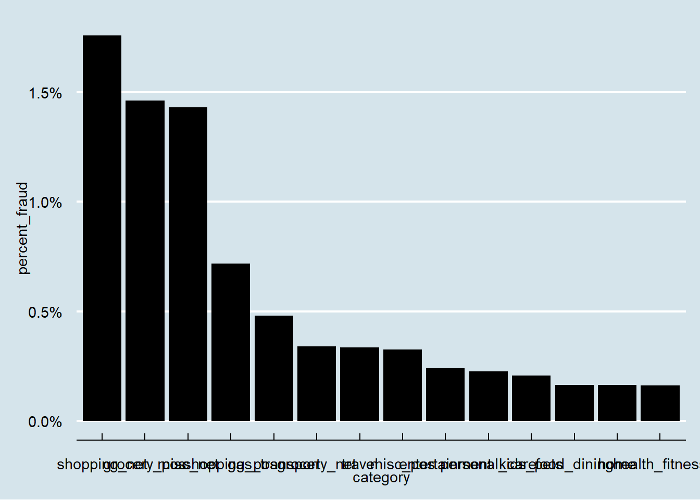
#When is fraud most prevalent - day,month,year
card_fraud %>%
#Filter out transactions without a fraud flag or amt
filter(!is.na(is_fraud) & !is.na(amt) & is_fraud==1) %>%
#Separate transaction date into individual fields
mutate(
date_only = lubridate::date(trans_date_trans_time),
month_name = lubridate::month(trans_date_trans_time, label=TRUE),
hour = lubridate::hour(trans_date_trans_time),
weekday = lubridate::wday(trans_date_trans_time, label = TRUE)
) %>%
#Group by Day & summaries count
group_by(weekday) %>%
summarise(count=n()) %>%
#arrange descending
arrange(desc(count))# A tibble: 7 × 2
weekday count
<ord> <int>
1 Mon 639
2 Sat 626
3 Sun 608
4 Fri 557
5 Thu 542
6 Tue 496
7 Wed 468#monday the day with most fraud cases
card_fraud %>%
#Filter out transactions without a fraud flag or amt
filter(!is.na(is_fraud) & !is.na(amt) & is_fraud==1) %>%
#Separate transaction date into individual fields
mutate(
date_only = lubridate::date(trans_date_trans_time),
month_name = lubridate::month(trans_date_trans_time, label=TRUE),
hour = lubridate::hour(trans_date_trans_time),
weekday = lubridate::wday(trans_date_trans_time, label = TRUE)
) %>%
#Group by Day & summaries count
group_by(month_name) %>%
summarise(count=n()) %>%
#arrange descending to see the most fraudulent months
arrange(desc(count))# A tibble: 12 × 2
month_name count
<ord> <int>
1 Mar 472
2 May 472
3 Jan 461
4 Feb 434
5 Jun 387
6 Apr 349
7 Dec 301
8 Nov 226
9 Sep 219
10 Oct 218
11 Aug 213
12 Jul 184#March and may are tied for the most fraudulent months with 472 cases
card_fraud %>%
#Filter out transactions without a fraud flag or amt
filter(!is.na(is_fraud) & !is.na(amt) & is_fraud==1) %>%
#Separate transaction date into individual fields
mutate(
date_only = lubridate::date(trans_date_trans_time),
month_name = lubridate::month(trans_date_trans_time, label=TRUE),
hour = lubridate::hour(trans_date_trans_time),
weekday = lubridate::wday(trans_date_trans_time, label = TRUE)
) %>%
#Group by Day & summaries count
group_by(trans_year) %>%
summarise(count=n()) %>%
#arrange descending to see the most fraudulent year
arrange(desc(count))# A tibble: 2 × 2
trans_year count
<dbl> <int>
1 2019 2721
2 2020 1215#2019 had the most fraud cases- Is fraud related to distance? The distance between a card holder’s home and the location of the transaction can be a feature that is related to fraud. To calculate distance, we need the latidue/longitude of card holders’s home and the latitude/longitude of the transaction, and we will use the Haversine formula to calculate distance. I adapted code to calculate distance between two points on earth which you can find below
# distance between card holder's home and transaction
# code adapted from https://www.geeksforgeeks.org/program-distance-two-points-earth/amp/
card_fraud <- card_fraud %>%
mutate(
# convert latitude/longitude to radians
lat1_radians = lat / 57.29577951,
lat2_radians = merch_lat / 57.29577951,
long1_radians = long / 57.29577951,
long2_radians = merch_long / 57.29577951,
# calculate distance in miles
distance_miles = 3963.0 * acos((sin(lat1_radians) * sin(lat2_radians)) + cos(lat1_radians) * cos(lat2_radians) * cos(long2_radians - long1_radians)),
# calculate distance in km
distance_km = 6377.830272 * acos((sin(lat1_radians) * sin(lat2_radians)) + cos(lat1_radians) * cos(lat2_radians) * cos(long2_radians - long1_radians))
)Plot a boxplot or a violin plot that looks at the relationship of distance and is_fraud. Does distance seem to be a useful feature in explaining fraud?
#Explore relationship for distance of fraud by plotting count of fraud cases by distance_km
card_fraud %>%
mutate(
# convert latitude/longitude to radians
lat1_radians = lat / 57.29577951,
lat2_radians = merch_lat / 57.29577951,
long1_radians = long / 57.29577951,
long2_radians = merch_long / 57.29577951,
# calculate distance in miles
distance_miles = 3963.0 * acos((sin(lat1_radians) * sin(lat2_radians)) + cos(lat1_radians) * cos(lat2_radians) * cos(long2_radians - long1_radians)),
# calculate distance in km
distance_km = 6377.830272 * acos((sin(lat1_radians) * sin(lat2_radians)) + cos(lat1_radians) * cos(lat2_radians) * cos(long2_radians - long1_radians))
)%>% #
#convert is)fraud to yes, no
mutate(is_fraud= case_when( !is.na(is_fraud) & is_fraud==1 ~ "Yes", TRUE ~ case_when( !is.na(is_fraud)~ "No", TRUE ~ "Unknown")))%>%
#Group by is_fraud
group_by(is_fraud) %>%
#create scatter plot to view distribution
ggplot(aes(x=is_fraud,y=distance_km)) +
geom_boxplot() 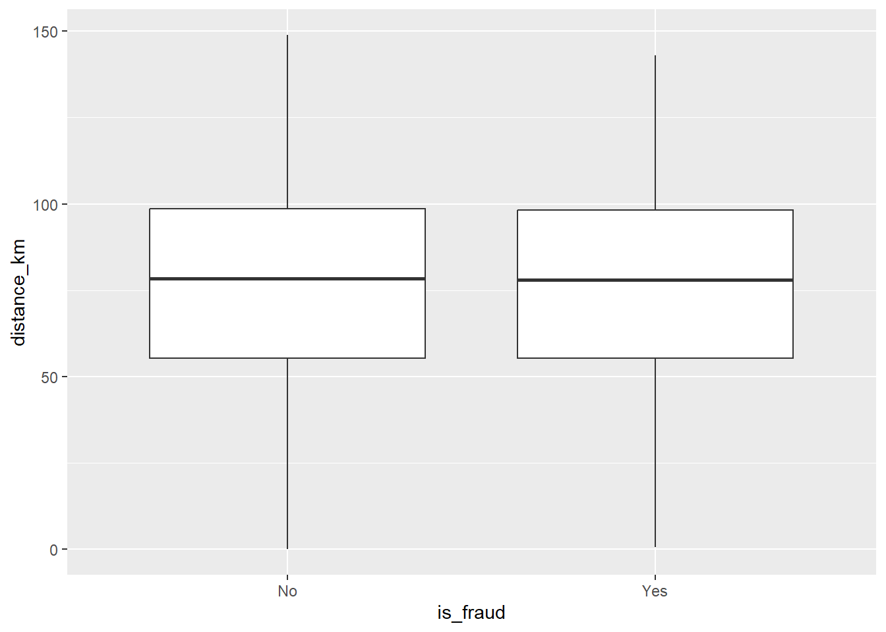
Exploring sources of electricity production, CO2 emissions, and GDP per capita.
There are many sources of data on how countries generate their electricity and their CO2 emissions. I would like you to create three graphs:
1. A stacked area chart that shows how your own country generated its electricity since 2000.
You will use
geom_area(colour="grey90", alpha = 0.5, position = "fill")
Details
- Who did you collaborate with: NA
- Approximately how much time did you spend on this problem set: 4.5H
- What, if anything, gave you the most trouble: Visual editor stopped working partway through, unable to see previews of code run. Ran out of time to try the graphs on energy data, initially the code would not work to populate the CO2/GDP data frames (unsure why - EDIT: FOUND THE issue, it was some of the descriptive code used to help with the mutation in one of the questions running on too long). i ended up reopening everything and managed to get it to work,